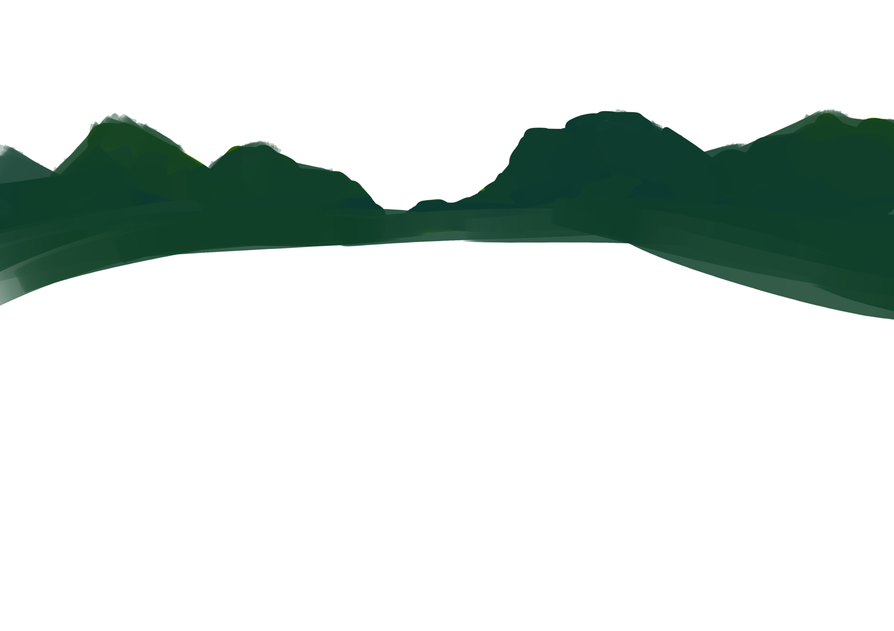
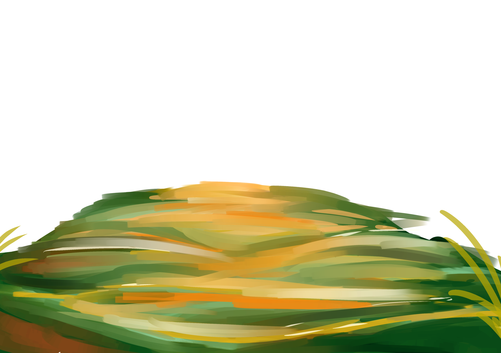

<section class="screen" style="background-image: url('../../images/slides/river.jpg'); top: 0; bottom: 0; left: 0; right: 0; position: fixed;">
    
    
    
    
    <button type="button" class="btn btn-primary" data-toggle="modal" data-target="#myModal" style="z-index: 10; position: fixed; bottom: 10px; right: 85px;">
        Launch demo modal
    </button>
    <button class="btn btn-primary next-slide" style="z-index: 11; position: fixed; bottom: 10px; right: 10px;">Next</button>
</section>